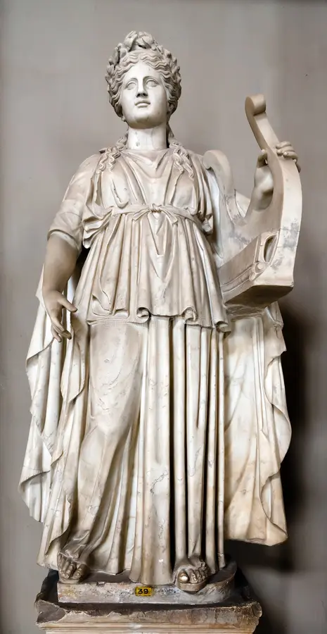
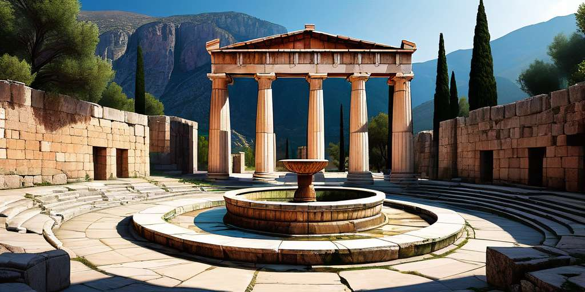
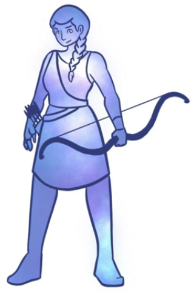
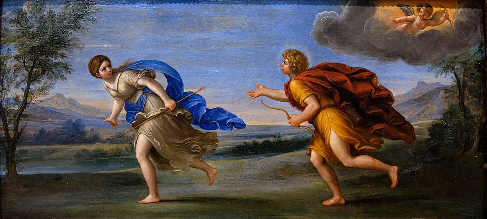
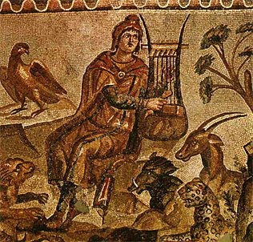
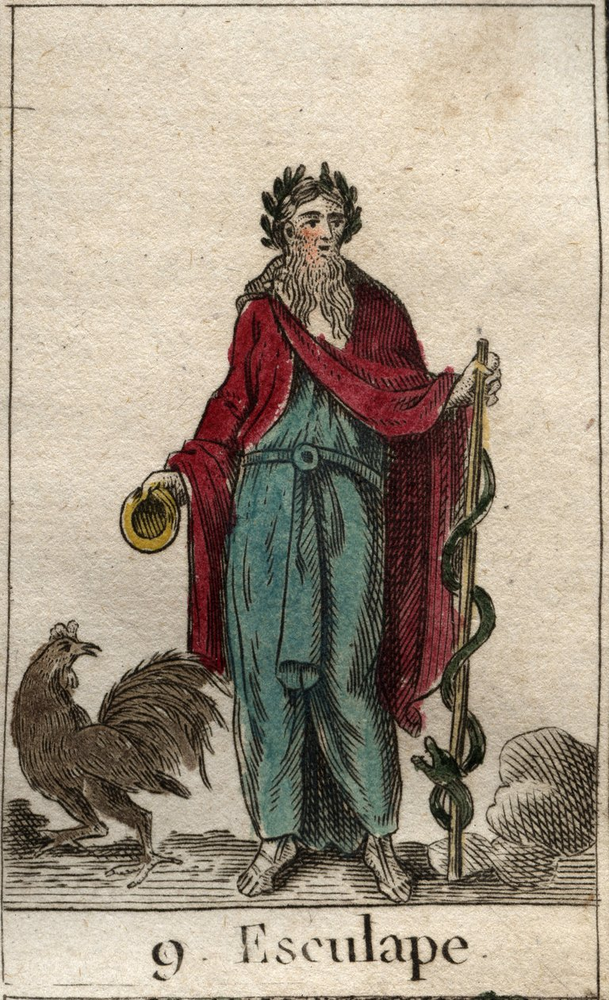

Apolo es el dios del sol, artes, arco, luz, medicina, profecía, plagas y un sinfín de funciones,
siendo Apolo uno de los dioses más populares, llegando a ser el dios principal en diversas civilizaciones,
como lo son Esparta, Troya o Delfos.
Además de ser el hijo varón favorito de Zeus

¿Cuál era el templo más famoso de Apolo?
El Oráculo de Delfos, obtenido por Apolo tras haber acabado con la serpiente Pitón,
la cual envió Hera en un ataque de celos contra su marido por haber concebido a Apolo y
Artemisa, siendo considerado un acto de infidelidad por parte del dios.

¿Cómo era el árbol genealógico de Apolo?
Apolo es hijo del dios Zeus y la diosa Leto, y hermano gemelo de Artemisa,
además de ser hermano mayor de los dioses Hermes, Dioniso y de varios héroes como Perseo o Heracles
por lado paterno.
Al ser hijo directo de Zeus, lo enlaza con la familia de los 6 hijos de Cronos, haciendo que
Poseidón, Hades, Demeter, Hera y Hestia sean sus tíos.
Artemisa

Zeus
Leto
Hermes
Mitos de Apolo
Uno de los mitos más conocidos del dios Apolo, sin contar el asesinato de Pitón, es un desenlace amoroso
debido a que Eros, el dios del Amor, hizo que Apolo se enamorara de la diosa Dafne mediante una de sus flechas doradas,
mientras que a Dafne le lanzó una flecha de plomo, que hacía que la ninfa solamente sintiera repulsión hacia el dios luminoso.
Terminando este mito con Dafne siendo convertida en un árbol de laurel con el fin de escapar del dios, y Apolo consagrándola con
una corona de laurel, haciéndola uno de sus símbolos sagrados.

Otro de los mitos más destacados del dios Apolo es su desempeño en la Guerra de Troya, apoyando al bando troyano,
realizando labores como bendecir a guerreros como Héctor de Troya para que siguiera corriendo sin cansarse, o el de enfermar
a los guerreros griegos por no ceder al rescate de la hija de uno de sus sacerdotes, o también ayudar al príncipe Paris de Troya a
guiar una de sus flechas al talón del guerrero Aquiles.
Descendencia de Apolo
Apolo, al igual que dioses como Zeus o Poseidón, tuvo varios hijos, pero los más destacados de esta deidad son:
Orfeo, quien tenía un talento tan impresionante con la música que logró convencer a Hades y Perséfone de dejar
marchar a su esposa Eurídice de vuelta al mundo de los vivos, el cual fracasó a punto de terminar.
Asclepio, quien fue tutelado por el centauro Quirón en el arte de la medicina, siendo tan famoso que en Roma acabó siendo
conocido como el dios de la medicina.


Apolo en la civilización romana
Muchos conocen la mitología romana como la mitología griega, pero cambiando los nombres,
siendo que muchos consideran que el nombre de Febo es el nombre romano, cuando realmente no es así.
La palabra Febo significa brillante en el antiguo griego, siendo descrito muchas veces al dios Apolo bajo el nombre
Febo Apolo, algunos ejemplos son en el Himno Homérico a Apolo.